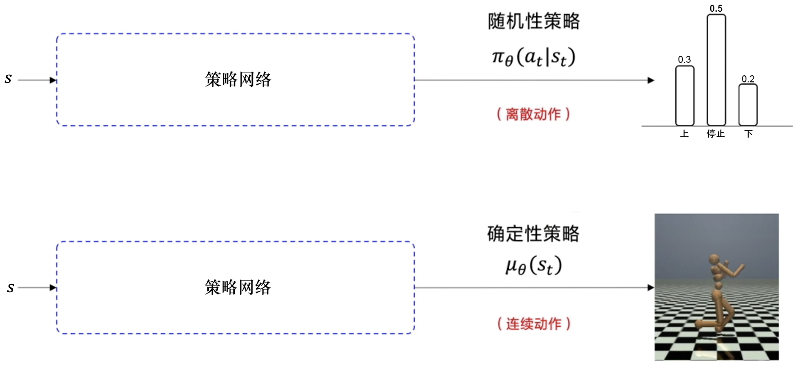
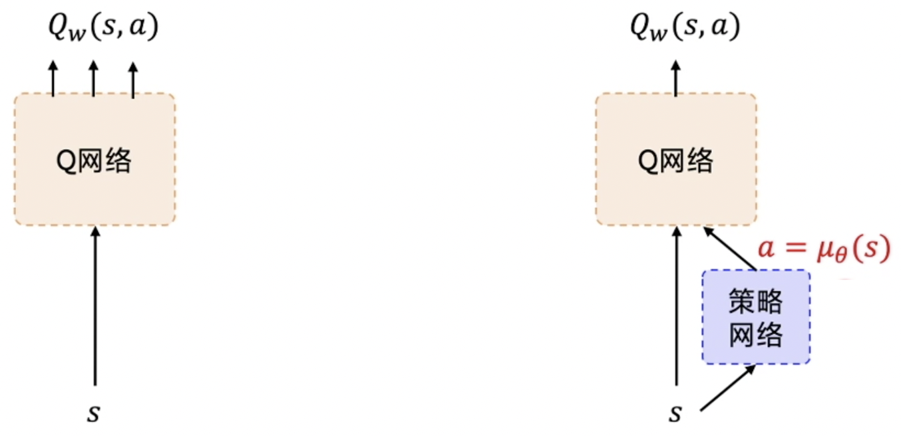
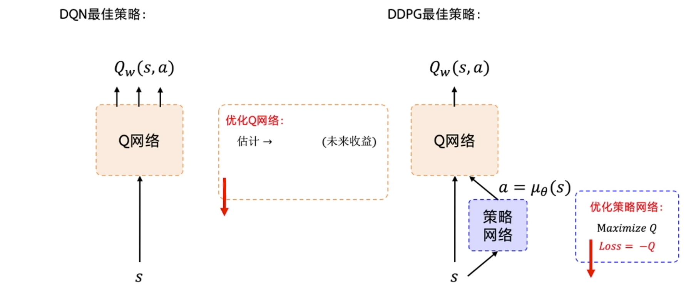

强化学习基础巩固（九）——深度确定性策略梯度（DDPG）
对于连续的动作，Q学习、DQN等算法是没有办法处理的。那我们怎么输出连续的动作呢？
离散动作与连续动作的区别
有几个动作，神经网络就输出几个概率值，我们用来表示这个随机性的策略。在连续的动作场景下，比如我们要输出机械臂弯曲的角度，我们就输出一个具体的浮点数。我们用来代表这个确定性的策略。

我们再对随机性策略与确定性策略进行解释。对随机性策略来说，输入某一个状态，采取某一个动作的可能性并不是百分之百的，而是有一个概率的（就好像抽奖一样），根据概率随机抽取一个动作。而对于确定性策略来说，它不受概率的影响。当神经网络的参数固定之后，输入同样的状态，必然输出同样的动作，这就是确定性策略。
深度确定性策略梯度
在连续控制领域，比较经典的强化学习算法就是深度确定性策略梯度（deep deterministic policy gradient，DDPG）。DDPG 的特点可以从它的名字中拆解出来，拆解成深度、确定性和策略梯度。
深度是因为用了神经网络；确定性表示 DDPG 输出的是一个确定性的动作，可以用于有连续动作的环境；策略梯度代表的是它用到的是策略网络。REINFORCE 算法每隔一个回合就更新一次，但 DDPG 是每个步骤都会更新一次策略网络，它是一个单步更新的策略网络。
DDPG 是 DQN的一个扩展版本，可以扩展到连续动作空间。在 DDPG 的训练中，它借鉴了DQN的技巧：目标网络和经验回放。经验回放与 DQN 是一样的，但目标网络的更新与 DQN 的有点儿不一样。提出 DDPG 是为了让 DQN 可以扩展到连续的动作空间，就是我们刚才提到的小车速度、角度和电压等这样的连续值。如图 12.5 所示，DDPG 在 DQN 基础上加了一个策略网络来直接输出动作值，所以 DDPG 需要一边学习 Q 网络，一边学习策略网络。Q 网络的参数用来表示。策略网络的参数用来表示。我们称这样的结构为演员-评论员的结构。

DQN与DDPG的联系如图所示。DQN 的最佳策略是想要学出一个很好的 Q 网络，学出这个网络之后，我们希望选取的那个动作使 Q 值最大。DDPG 的目的也是求解让 Q 值最大的那个动作。优化策略网络的梯度就是要最大化这个 Q 值，所以构造的损失函数就是让 Q 取一个负号。我们写代码的时候把这个损失函数放入优化器里面，它就会自动最小化损失，也就是最大化 Q。
这里要注意，除了策略网络要做优化，DDPG 还有一个 Q 网络也要优化。评论员一开始也不知道怎么评分，它也是在一步一步的学习当中，慢慢地给出准确的分数。我们优化 Q 网络的方法其实与 DQN 优化 Q 网络的方法是一样的，我们用真实的奖励和下一步的即来拟合未来的奖励。然后让 Q 网络的输出逼近。所以构造的损失函数就是直接求这两个值的均方差。构造好损失函数后，我们将其放到优化器中，让它自动最小化损失。

如下图所示，我们可以把两个网络的损失函数构造出来。策略网络的损失函数是一个复合函数。我们把代入，最终策略网络要优化的是策略网络的参数。Q 网络要优化的是和之间的一个均方差。但是 Q 网络的优化存在一个和 DQN 一模一样的问题就是它后面的是不稳定的。此外，后面的也是不稳定的，因为也是一个预估的值。
为了使更加稳定，DDPG 分别给 Q 网络和策略网络搭建了目标网络，即target_Q网络和target_P策略网络。网络是为了计算中。里面的需要的下一个动作是通过网络输出的，即。Q 网络和策略网络的参数是，网络和策略网络的参数是。DDPG 有4个网络，策略网络的目标网络 和 Q 网络的目标网络是颜色比较深的这两个，它们只是为了让计算 更稳定。因为这两个网络也是固定一段时间的参数之后再与评估网络同步最新的参数。
这里训练需要用到的数据就是，我们只需要用到这4个数据。我们用回放缓冲区把这些数据存起来，然后采样进行训练。经验回放的技巧与 DQN 中的是一样的。注意，因为 DDPG 使用了经验回放技巧，所以 DDPG 是一个异策略的算法。